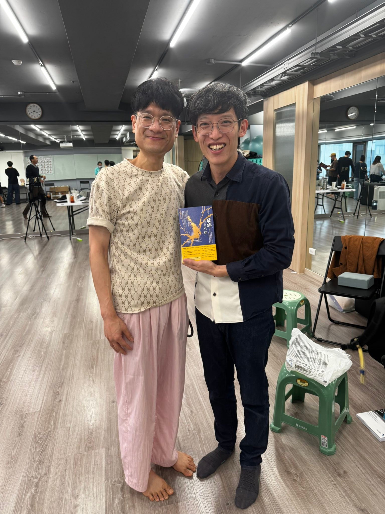
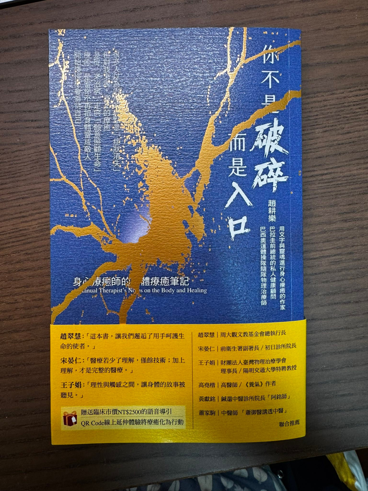
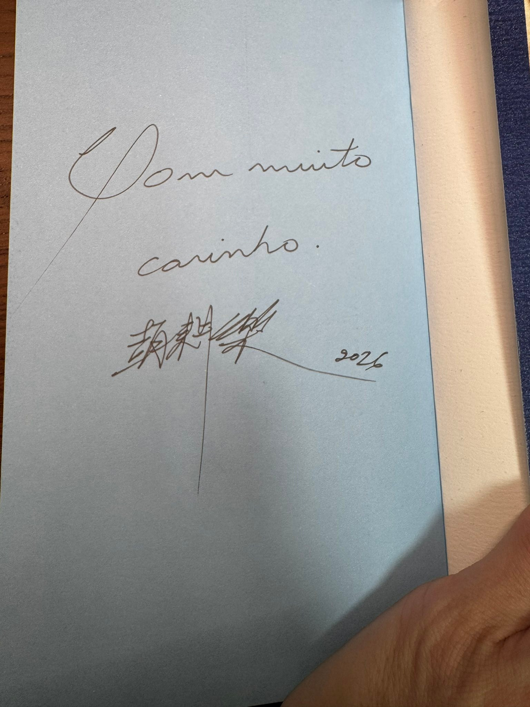

進修路上的神獸圖鑑No.x —再次補獲野生傳說級大師
進修路上的神獸圖鑑No.x —再次補獲野生傳說級大師
每次出門上課進修，真的常常會被嚇到。有時候轉個頭，才發現旁邊坐的竟然就是傳說中的某某神級人物，這次當然也不例外！
繼上次在 PNF 工作坊巧遇傅士豪老師後，這次上 Cranial Osteopathy（顱骨骨病學），居然讓我遇到了仰慕已久的趙耕樂老師！
趙老師除了是台灣的物理治療師，也是巴西物理治療師與骨病學治療師！他最厲害的地方，是能將骨病學、物理徒手乃至於身心靈的技法完美結合。撇開學歷不說，光是攤開他進修學習過的履歷表，那個厚度跟廣度，真的是讓我連車尾燈都看不到。
但真正神級的前輩，往往也是最謙卑的。幾天相處下來，完全感受到老師是一位非常親和、慈善的大前輩。最感動的是，在課程最後一天，老師竟然送了我一個超大驚喜——他剛出版的大作《你不是破碎而是入口》，而且還附上親筆簽名 😍😍😍
身為一個資深迷弟，我當然沒有放過這個好機會，厚著臉皮邀請老師：「未來有機會，能不能來『拾初』開個工作坊，讓大家有機會向您學習？」
沒想到老師連想都沒想，反射動作直接回：「好啊！沒問題！」
實在太讓人期待了 🥰🥰🥰
這次因為上課節奏緊湊，沒機會能跟老師坐下來好好長談，但光是這幾段短暫的交流，已經讓我徹底滿足 😌
非常期待未來老師蒞臨指導，我也會繼續在臨床與教學的路上，努力向這些前輩們看齊 🫡
進修工作坊意外大豐收，神獸圖鑑解鎖再 +1！😆😆😆


